CS284A Spring 2025 Homework 4 Write-Up
Link to webpage: (TODO) cs184.eecs.berkeley.edu/sp25
Link to GitHub repository: (TODO) cs184.eecs.berkeley.edu/sp25
Overview
Give a high-level overview of what you implemented in this homework. Think about what you've built as a whole. Share your thoughts on what interesting things you've learned from completing the homework.Part 1: Masses and springs
In this part, I implemented the construction of the cloth as a mass-spring system. The cloth is discretized into a regular grid of point masses with num_width_points points along the width and num_height_points points along the height. I stored the point masses in row-major order, so the point at grid coordinate (x, y) is stored at index y * num_width_points + x. This ordering is important because the later rendering code assumes this layout when building the cloth mesh.
For a horizontal cloth, I placed the point masses on the xz plane and fixed their y coordinate to 1. For a vertical cloth, I placed the point masses on the xy plane and assigned each mass a small random z offset between approximately -0.001 and 0.001. I also checked each mass's grid coordinate against the pinned list from the scene file, and marked the corresponding point masses as pinned.
After all point masses were created, I added springs between neighboring masses. I created structural springs to the left and above neighbors, shearing springs to the upper-left and upper-right diagonal neighbors, and bending springs to the neighbors two grid cells away to the left and above. I added the springs only after creating all point masses, since each spring stores pointers to the two point masses at its endpoints.
|
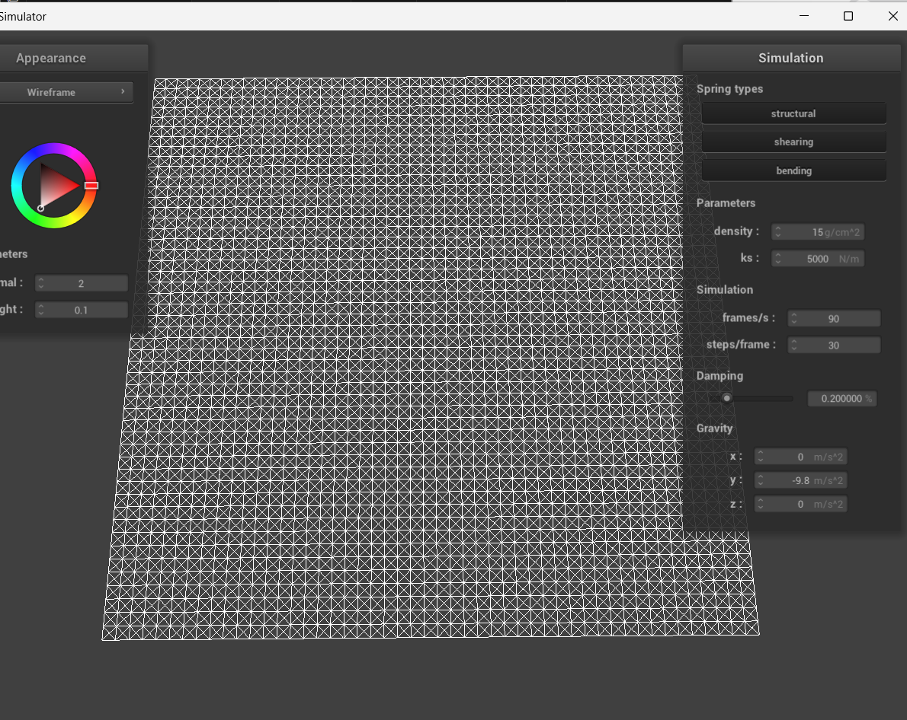 scene/pinned2.json without shearing constraints. The cloth still has the main horizontal and vertical grid structure, but the diagonal shear springs are absent.
|
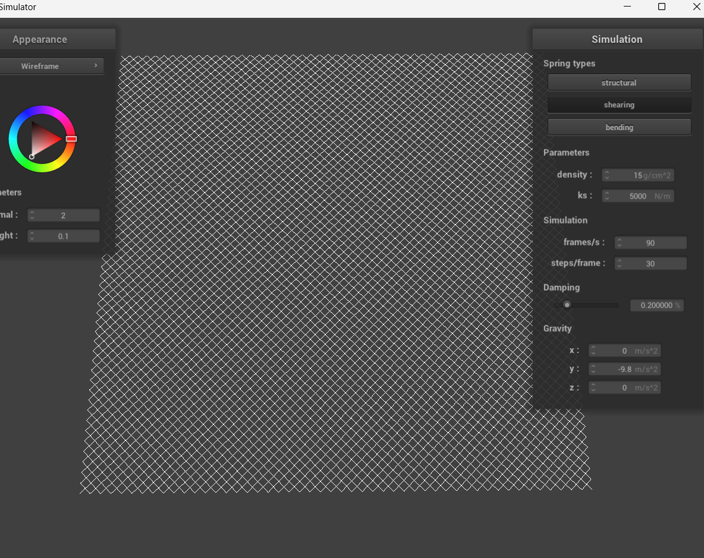 scene/pinned2.json with only shearing constraints enabled. The visible springs form diagonal diamond-shaped connections between adjacent rows.
|

scene/pinned2.json with all structural, shearing, and bending constraints enabled. This is the full spring network used for the default simulation.
|
These three wireframe views make the different spring types easier to distinguish. Without shearing constraints, the cloth has a rectangular grid but less resistance to diagonal distortion. With only shearing constraints, the spring network is mostly diagonal and does not provide the usual horizontal and vertical support. With all constraints enabled, the cloth has the most complete local structure and is suitable for the simulation step in the next part.
Part 2: Simulation via numerical integration
In this part, I implemented the time stepping procedure for the cloth simulation. At the beginning of each call to simulate, I reset the force accumulator of every point mass, since forces should be recomputed from the current configuration at each time step instead of being carried over from previous steps.
I first computed the total external force from the list of external accelerations. In the default scene, the main external acceleration is gravity. For each point mass, I converted acceleration into force using Newton's second law, \(F = ma\). I then added spring forces using Hooke's law. For each enabled spring, I compared the current distance between its two endpoint masses with its rest length, computed the spring force along the direction between the two masses, and applied equal and opposite forces to the two endpoints. I used the regular spring constant for structural and shearing constraints, and a weaker spring constant for bending constraints so that bending resistance would not dominate the cloth motion.
After force accumulation, I updated all non-pinned point masses using Verlet integration:
\[ x_{t+\Delta t} = x_t + (1-d)(x_t - x_{t-\Delta t}) + a_t\Delta t^2 . \]
The term \(x_t - x_{t-\Delta t}\) acts like a velocity term. The damping parameter scales this term down, which removes energy from the system over time. Since the GUI damping value is given as a percentage, I divided it by 100 before using it in the update. Pinned point masses are skipped during integration, so the selected corners remain fixed while the rest of the cloth moves.
Finally, I applied the Provot constraint to prevent springs from stretching too much in a single time step. If a spring became more than 10% longer than its rest length, I corrected the endpoint positions so that the spring length was reduced to the allowed maximum. If both endpoint masses were movable, I split the correction evenly between them. If one endpoint was pinned, the entire correction was applied to the unpinned endpoint.
Default behavior
With the default parameters, scene/pinned2.json falls from the two pinned upper corners and eventually forms a smooth hanging shape. In my run, the default values were approximately density = 15 g/cm^2, ks = 5000 N/m, and damping = 0.206897%. The middle region between the two pinned corners sags downward, while the two pinned points remain fixed.
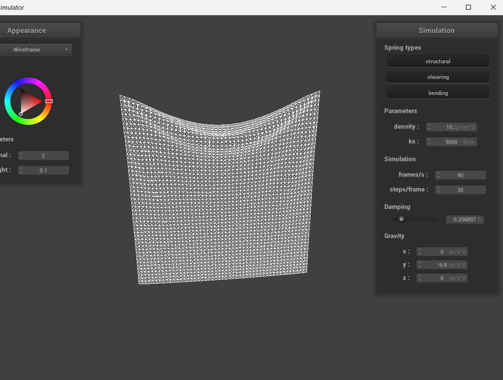
scene/pinned2.json. The cloth hangs from two pinned corners and reaches a moderate sagging shape.
Effect of changing spring constant ks
The spring constant controls how strongly the springs resist changes in length. With a low spring constant, the cloth behaves more softly. In the ks = 500 case, the region between the two pinned corners droops more noticeably, and the cloth looks easier to stretch. This happens because the spring forces are weaker, so gravity can deform the cloth more before the springs pull it back.
With a high spring constant, the cloth becomes stiffer. In the ks = 50000 case, the top span between the pinned corners stays tighter and the overall sag is reduced. The cloth still falls under gravity, but the stronger spring forces resist stretching more aggressively, so the resting shape is less loose than the low-ks case.
|
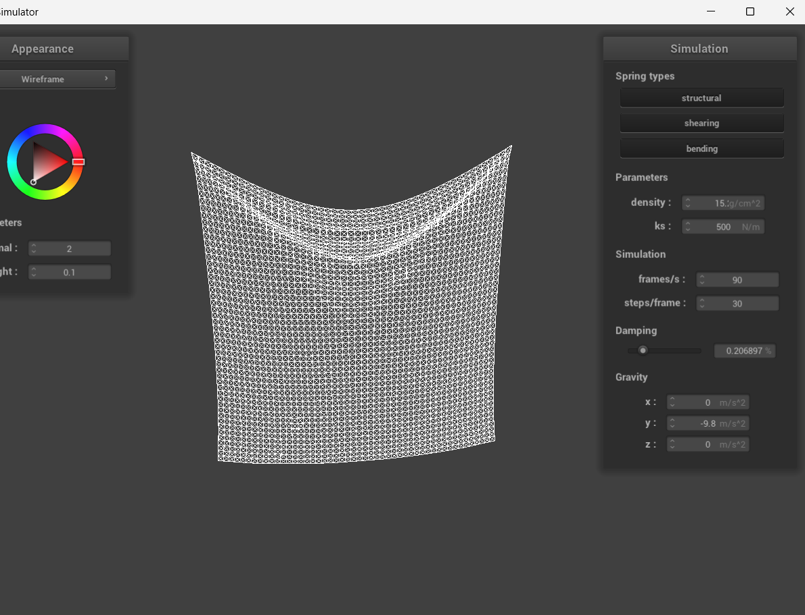 ks = 500. The cloth is softer and the middle span sags more.
|
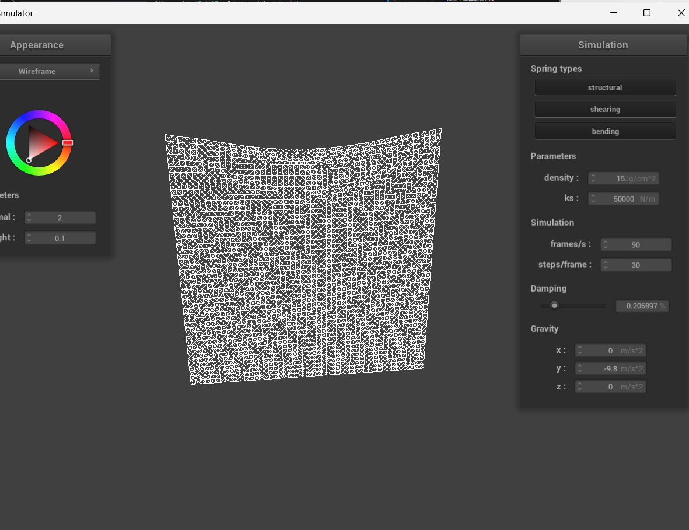 ks = 50000. The cloth is stiffer and resists stretching more strongly.
|
Effect of changing density
Density changes the mass assigned to each point mass. Gravity still creates the same gravitational acceleration, because the external force is computed as \(F = ma\) and then divided by mass during integration. However, spring forces do not automatically scale with mass. As a result, increasing density makes the spring forces produce smaller accelerations relative to the mass of the cloth.
With low density, such as density = 2 g/cm^2, the cloth appears lighter and the spring forces are relatively more effective at holding the shape. The span between the pinned corners does not sag as much. With higher density, such as density = 20 g/cm^2, the cloth behaves more heavily. The same spring constant has less influence relative to the mass, so the cloth sags more noticeably in the middle and responds more slowly.
|
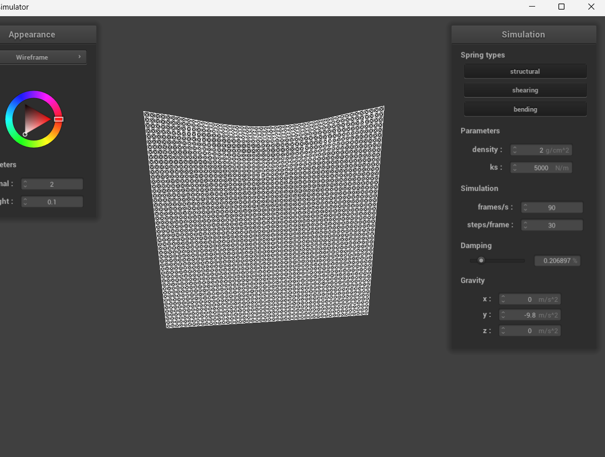 density = 2 g/cm^2. The cloth is lighter and the center span stays higher.
|
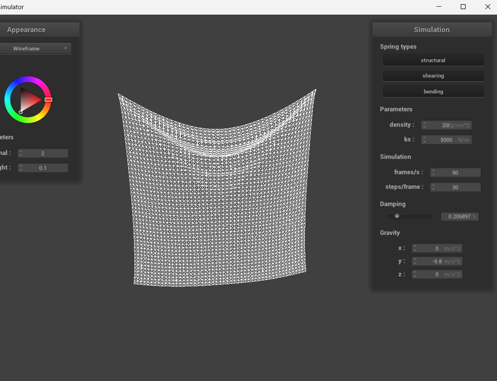 density = 20 g/cm^2. The cloth feels heavier and sags more under the same spring constant.
|
Effect of changing damping
Damping controls how much of the previous motion is preserved during Verlet integration. It does not directly change the gravitational force or the spring constant. Instead, it scales the velocity-like term \(x_t - x_{t-\Delta t}\). A smaller damping value keeps more kinetic energy in the cloth, while a larger damping value removes energy more quickly.
With damping = 0, the cloth has almost no artificial energy loss. In my result, the cloth continued to oscillate for a long time, and the lower part of the cloth developed visible waves and folds during the motion. With larger damping, such as damping = 1.0%, the cloth fell more slowly and lost its motion much faster. It did not keep bouncing back and forth after falling; instead, the motion was quickly suppressed.
|
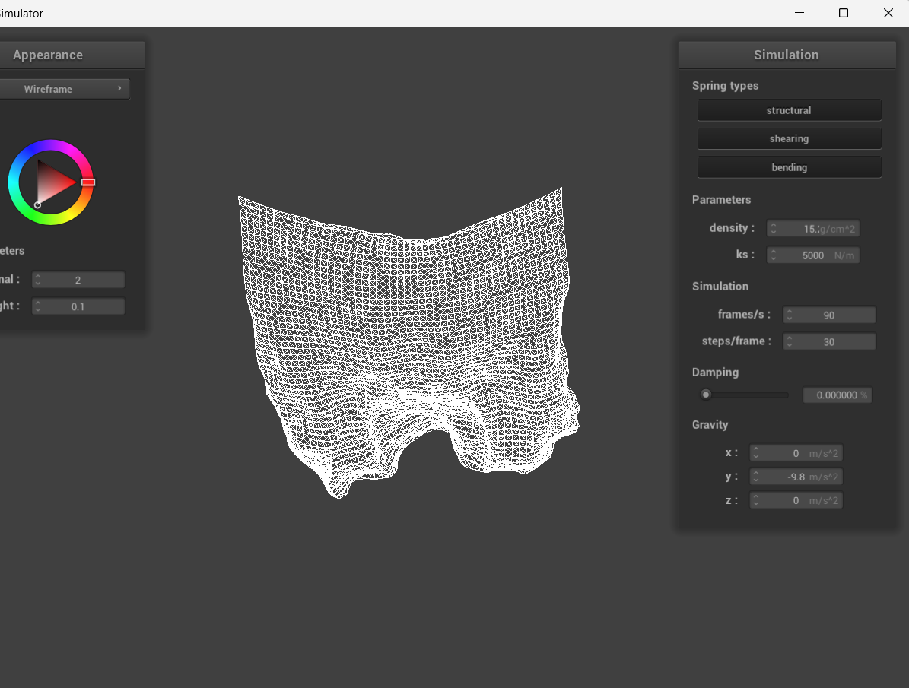 damping = 0. The cloth keeps oscillating and develops stronger waves during the motion.
|
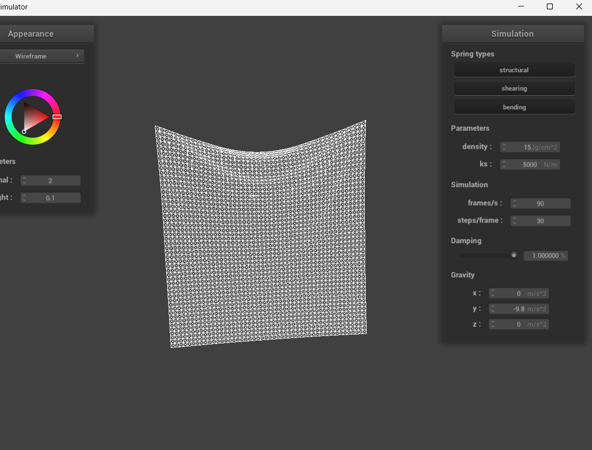 damping = 1.0%. The cloth loses energy quickly, falls more slowly, and has much less rebound.
|
Final resting state for pinned4.json
The image below shows the shaded cloth from scene/pinned4.json after reaching its final resting state. I used the default simulation parameters, with all structural, shearing, and bending constraints enabled. Since all four corners are pinned, the cloth forms a hanging square sheet whose center sags downward while the corners remain fixed.
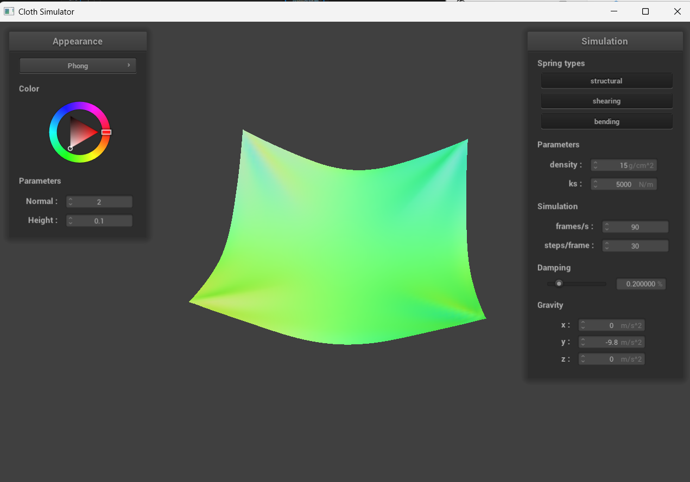
scene/pinned4.json with default parameters and all constraints enabled.
Part 3: Handling collisions with other objects
In this part, I implemented cloth collisions with spheres and planes. The collision handling is applied after Verlet integration, when each point mass has already received its tentative new position for the current time step. I then check every non-pinned point mass against every collision object in the scene and correct the point mass position if it has crossed into the object.
For sphere collision, I first check whether the current point mass position is inside the sphere by comparing its distance to the sphere center with the sphere radius. If the point mass is inside, I compute the direction from the sphere center to the point mass and move the point mass back to the corresponding point on the sphere surface. The correction is measured relative to the point mass's previous position, and the final correction is scaled by 1 - friction. This keeps the cloth outside the sphere while allowing friction to reduce sliding motion along the surface.
For plane collision, I use the signed distance from the point mass to the plane. If the signed distances at the previous and current positions have opposite signs, then the point mass crossed the plane during this time step. I compute the intersection point between the point mass trajectory and the plane, then move the point mass back to the side it came from with a small surface offset. As with the sphere, the correction is scaled by 1 - friction. This prevents the cloth from falling through the plane while still allowing it to settle naturally on the surface.
Sphere collision with different spring constants
I tested the sphere collision using scene/sphere.json with three different spring constants. With the default ks = 5000, the cloth drapes naturally over the sphere and forms several vertical folds as it settles. The result is a middle ground between a very soft cloth and a very stiff one.
When I lowered the spring constant to ks = 500, the cloth became softer and stretched more easily. It wrapped more closely around the sphere and produced stronger hanging folds. The lower parts of the cloth also dropped farther because the springs resisted deformation less strongly.
When I increased the spring constant to ks = 50000, the cloth became much stiffer. It did not conform to the sphere as tightly, and the hanging shape looked smoother and more tent-like. Compared with the low-ks case, the cloth kept a broader, more supported shape and showed less local stretching.
|
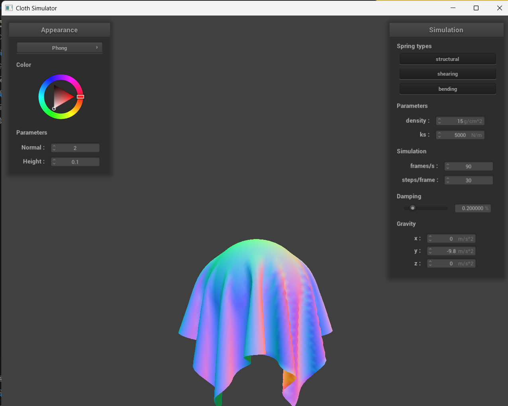 ks = 5000. The cloth drapes over the sphere with a moderate amount of folding.
|
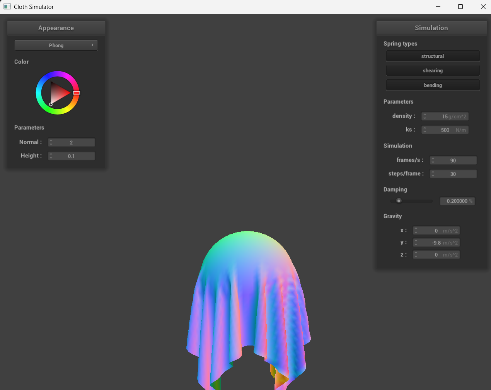 ks = 500. The cloth is softer, stretches more, and hangs lower around the sphere.
|
|
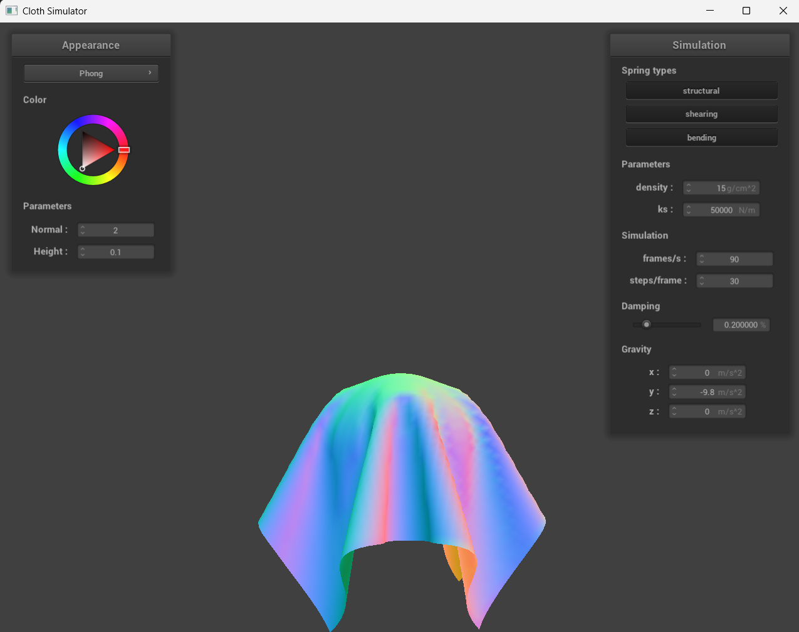 ks = 50000. The cloth is stiffer and forms a smoother, more supported shape.
|
Plane collision
I also tested plane collision using scene/plane.json. In this scene, the cloth is initially horizontal and unpinned, and gravity pulls it downward onto a horizontal plane. Since there are no pinned points and the plane is flat, the final resting state is much simpler than the sphere case: the cloth settles as a nearly flat square sheet lying on top of the plane. Changing ks does not visibly change the final plane result as much as it does for the sphere, because the plane does not force the cloth to bend around a curved obstacle.
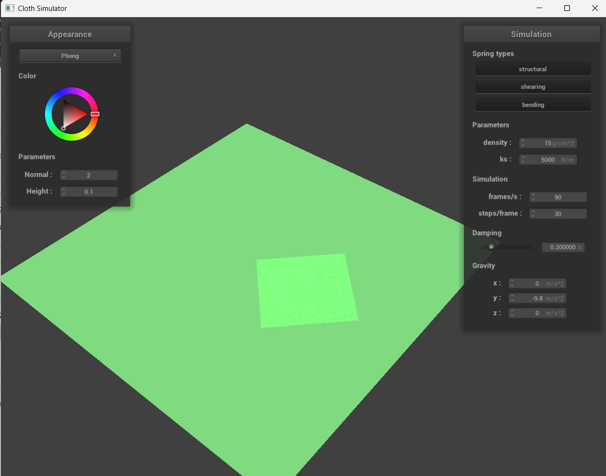
Part 4: Handling self-collisions
In this part, I implemented cloth self-collision using spatial hashing. Without self-collision, different parts of the cloth can pass through each other when the cloth folds, especially in scene/selfCollision.json. A naive approach would compare every pair of point masses, but that would require \(O(n^2)\) distance checks per time step. Instead, I divided the 3D space into grid cells and only checked point masses that fall into the same spatial cell.
I implemented hash_position by mapping each point mass position to a 3D box. The box dimensions are based on the cloth resolution, using a width of \(3 \cdot width / num\_width\_points\), a height of \(3 \cdot height / num\_height\_points\), and a depth equal to the larger of those two values. Each point's position is converted to integer box coordinates, and those coordinates are combined into a single hash key.
In build_spatial_map, I clear the old hash table at the beginning of every time step and insert every point mass into the bucket corresponding to its current position. Then, in self_collide, I look up the current point mass's bucket and compare it only with the other point masses in that same bucket. If another point mass is closer than 2 * thickness, I compute a correction vector that pushes the current point mass away until the pair would be at least 2 * thickness apart. When there are multiple nearby point masses, I average all correction vectors and divide the result by simulation_steps to avoid applying an overly sudden correction.
The screenshots below show the default self-collision behavior. The cloth starts as a vertical sheet, falls under gravity, and begins to fold onto itself. Instead of clipping through itself and collapsing into a single layer, the cloth forms visible rolled and stacked layers. Near the resting state, it is still slightly uneven and bouncy, but the different layers remain separated instead of passing through each other.
|
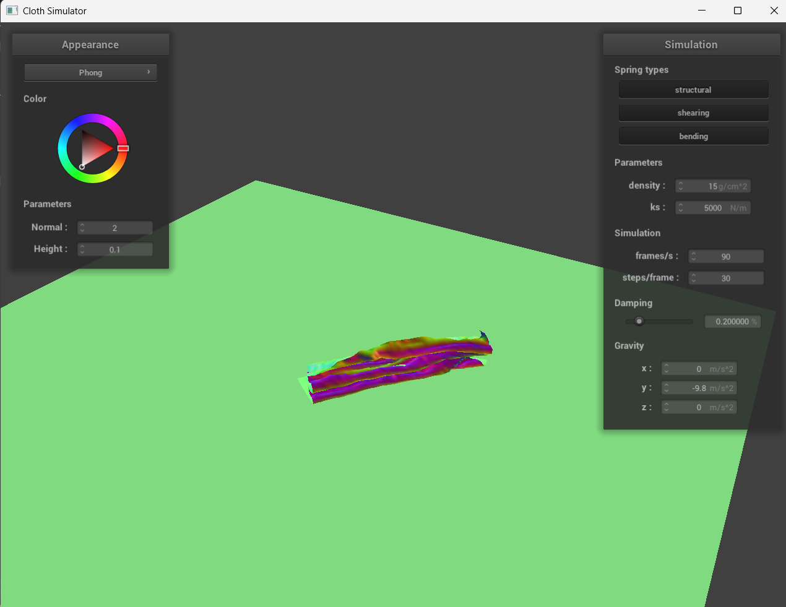 scene/selfCollision.json with default parameters. The cloth begins to fall and develop surface waves before folding onto itself.
|
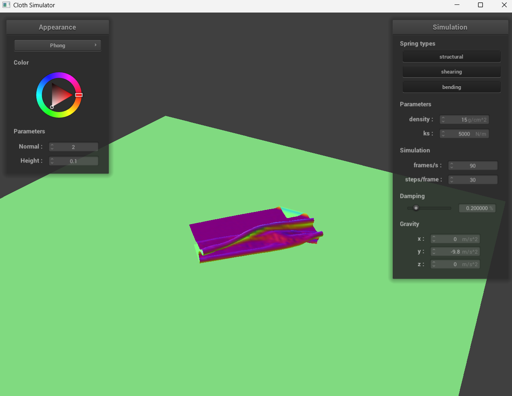 |
|
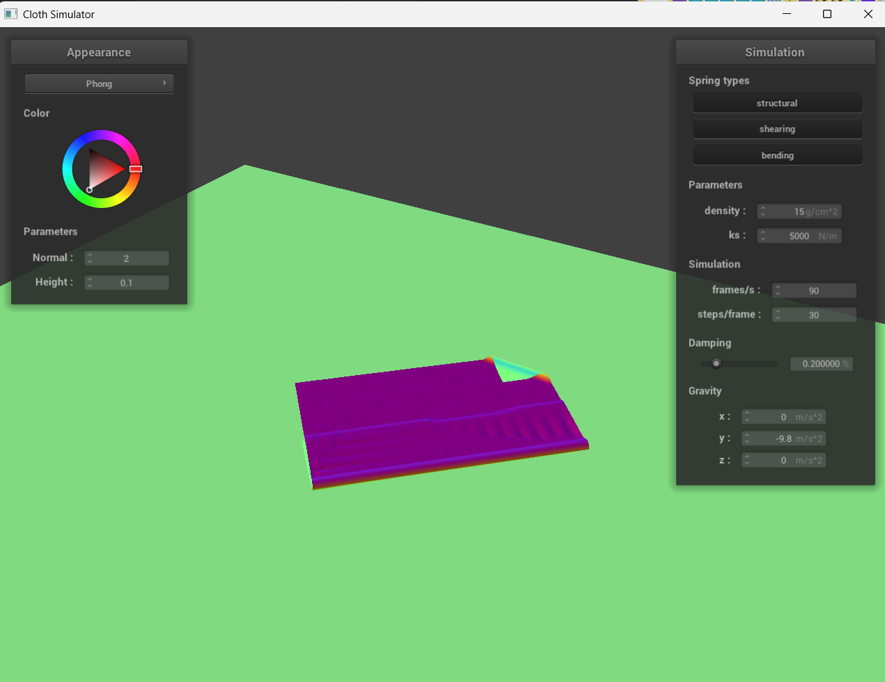 |
|
Effect of changing density
I then varied the cloth density while keeping the spring constant at the default ks = 5000. With low density, such as density = 2 g/cm^2, the cloth behaves lighter. The spring forces have a stronger effect relative to mass, so the cloth is more easily lifted and reshaped by the internal spring constraints. In the screenshot, the cloth forms larger, more open folds and retains a more lifted shape during the self-collision process.
With high density, such as density = 50 g/cm^2, the cloth behaves much heavier. It falls more decisively, rebounds less after hitting itself and the plane, and collapses into a flatter, denser stack. The folds are still present, but the whole cloth looks more compressed because the same spring forces produce smaller accelerations on the heavier point masses.
|
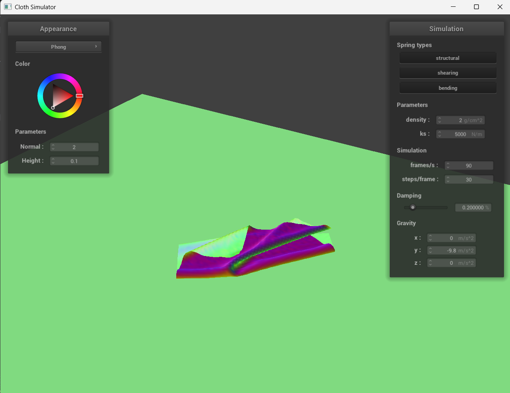 density = 2 g/cm^2. The cloth is lighter and forms more open folds.
|
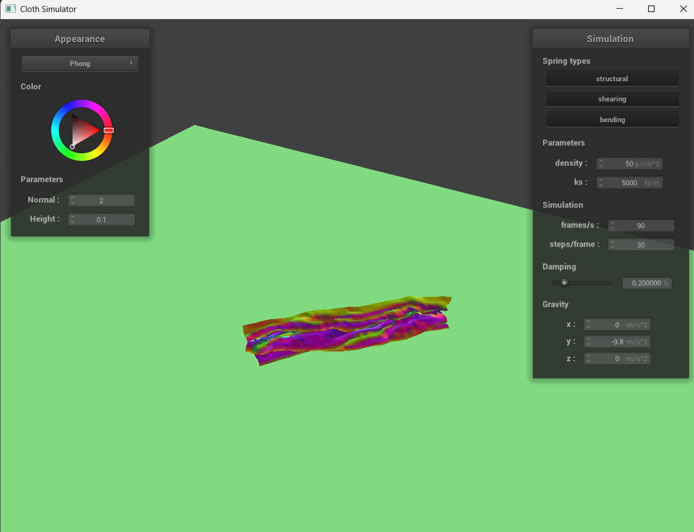 density = 50 g/cm^2. The cloth rebounds less and collapses into a heavier, flatter folded stack.
|
Effect of changing spring constant ks
I also varied the spring constant while keeping the density at the default value, density = 15 g/cm^2. With a low spring constant, such as ks = 500, the cloth is softer and stretches more easily. During self-collision, this creates deeper and messier folds because the cloth does not strongly resist local deformation. The final stack looks more crumpled, with many small wrinkles and compressed layers.
With a high spring constant, such as ks = 50000, the cloth is much stiffer. It resists stretching and local deformation more strongly, so the folds are broader and the cloth keeps a more coherent sheet-like shape. Compared with the low-ks case, it does not collapse into as many small wrinkles, and the folded layer looks smoother and more supported.
ks = 500. The cloth is soft, stretches more, and forms deeper, more compressed folds.
|
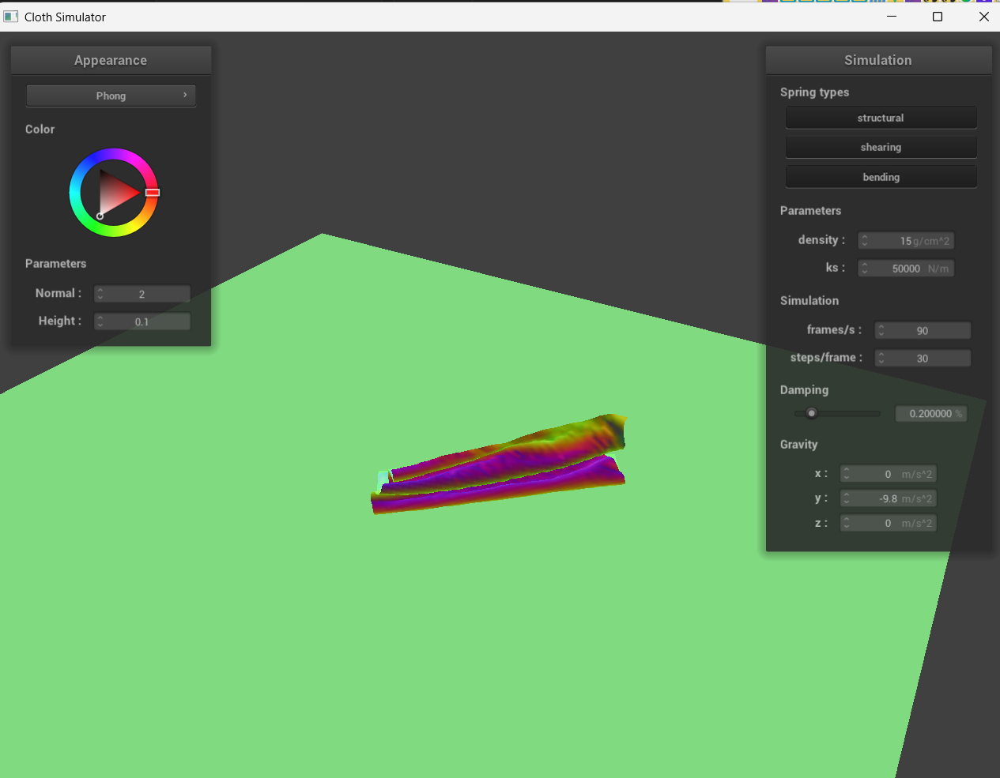 ks = 50000. The cloth is stiffer and forms broader, smoother folds.
|
Overall, self-collision changes the behavior of the falling cloth significantly. Instead of passing through itself, the cloth builds up visible layers as it folds. Density mainly changes how heavy and collapsed the folded pile feels, while the spring constant changes whether the folds are soft and crumpled or stiff and broad.
Part 5: Shaders
In this part, I implemented several GLSL shaders to render the cloth with different lighting and material effects in real time. A shader program is a small program that runs on the GPU as part of the graphics pipeline. In this homework, the vertex shader processes per-vertex data such as position, normal, tangent, and UV coordinate. It transforms vertex positions into screen space and passes interpolated geometric values to the fragment shader. The fragment shader then uses those interpolated values to compute the final color of each fragment.
The vertex and fragment shaders work together. The vertex shader prepares world-space position, normal, tangent, and UV information. The fragment shader then uses those values for lighting, texture lookup, normal perturbation, displacement shading, environment reflection, or custom stylized effects. This is different from the CPU path tracer in the previous homework because the GPU shader pipeline computes these effects interactively for each frame.
Diffuse shading
For diffuse shading, I implemented the Lambertian lighting model:
\[ L_d = k_d \frac{I}{r^2} \max(0,n \cdot l). \]
In the shader, \(n\) is the normalized surface normal, \(l\) is the normalized direction from the fragment to the light, \(I\) is the light intensity, and \(r^2\) is the squared distance from the fragment to the light. I used the dot product \(n \cdot l\) to measure how directly the light hits the surface, and clamped it to zero so that back-facing regions do not receive negative light. The screenshot shows the expected result: the cloth is brighter where it faces the light and darker along folds and regions turned away from the light.
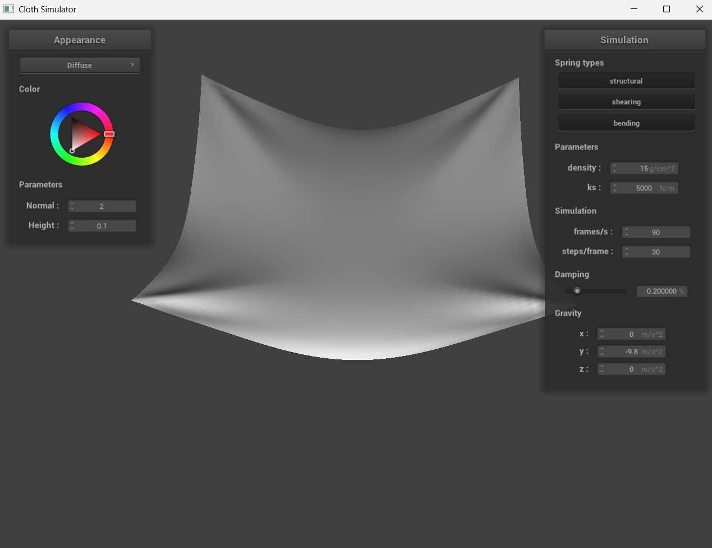
Blinn-Phong shading
I implemented Blinn-Phong shading by combining ambient, diffuse, and specular components:
\[ L = k_a I_a + k_d \frac{I}{r^2}\max(0,n\cdot l) + k_s \frac{I}{r^2}\max(0,n\cdot h)^p . \]
The ambient component gives the cloth a base level of visibility. The diffuse component gives the main smooth light-to-dark variation across the cloth. The specular component creates a view-dependent highlight using the half-vector \(h\), which is the normalized average of the light direction and the view direction. The exponent \(p\) controls the sharpness of the specular highlight. I chose the material coefficients \(k_a\), \(k_d\), \(k_s\), ambient intensity, and shininess manually so that the individual components are visible in the screenshots. These are material parameters, so they do not have a unique required value as long as the Blinn-Phong model is implemented correctly.
|
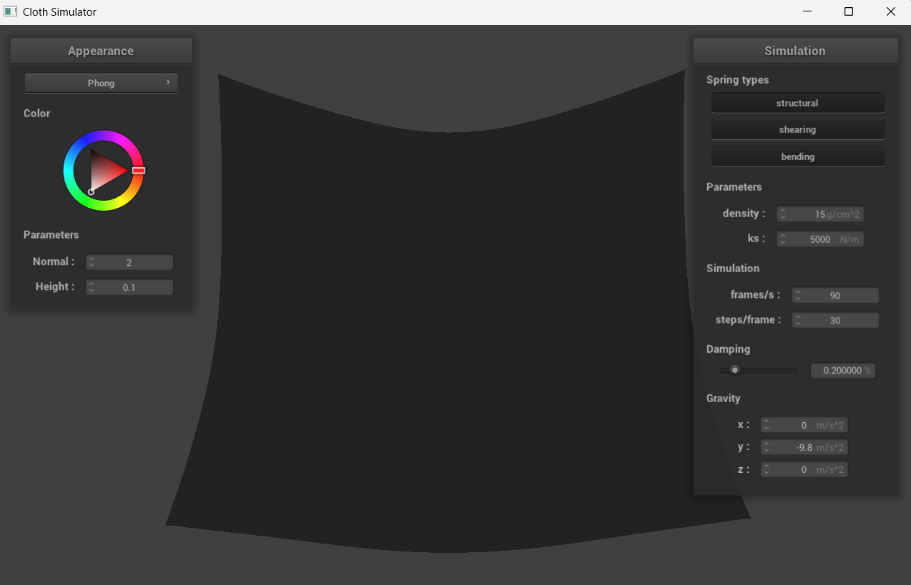 |
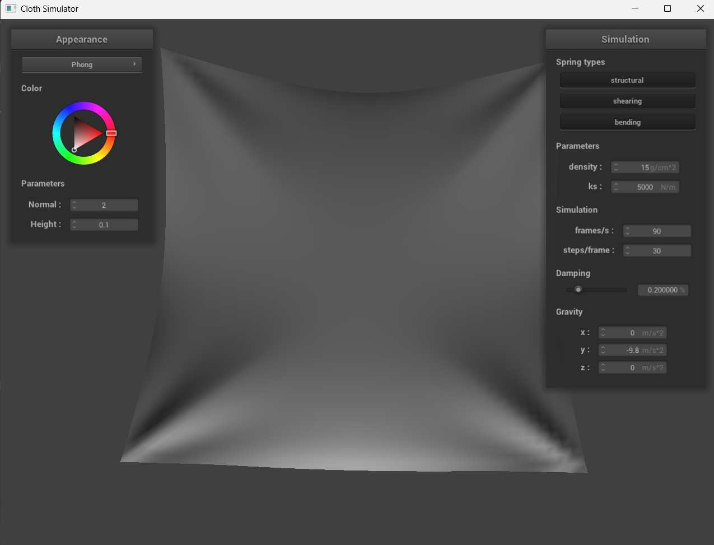 |
|
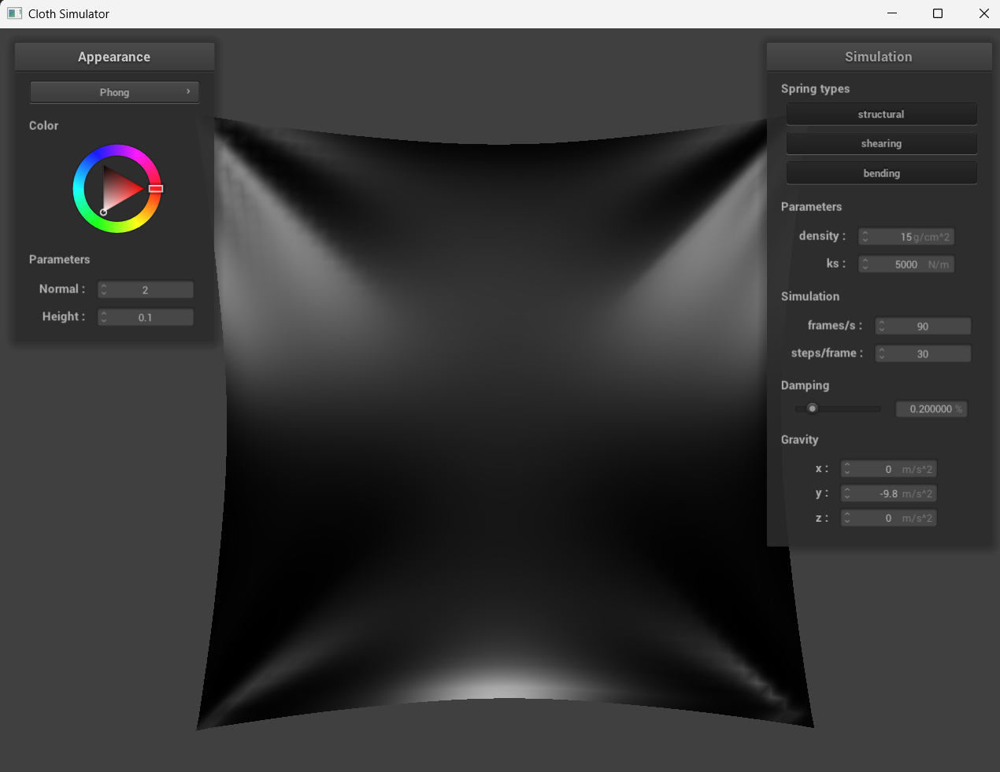 |
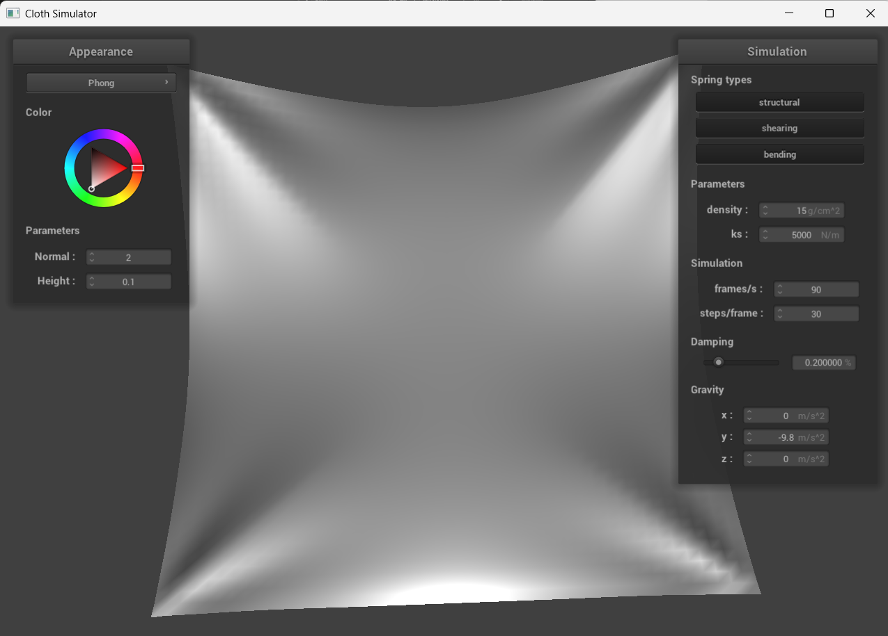 |
These four images separate the role of each term. Ambient alone makes the silhouette visible but does not explain the folds. Diffuse alone gives the clearest overall cloth shape. Specular alone is much more angle-sensitive, so it appears only in small highlight regions and is otherwise dark. The full Blinn-Phong image combines all three terms and gives the most complete material appearance.
Texture mapping
For texture mapping, I sampled u_texture_1 using the interpolated UV coordinate passed from the vertex shader. I replaced the default texture with my own image, so the cloth displays a custom texture rather than the starter texture. This shader directly outputs the sampled image color, so it mainly demonstrates UV-based image lookup rather than lighting.
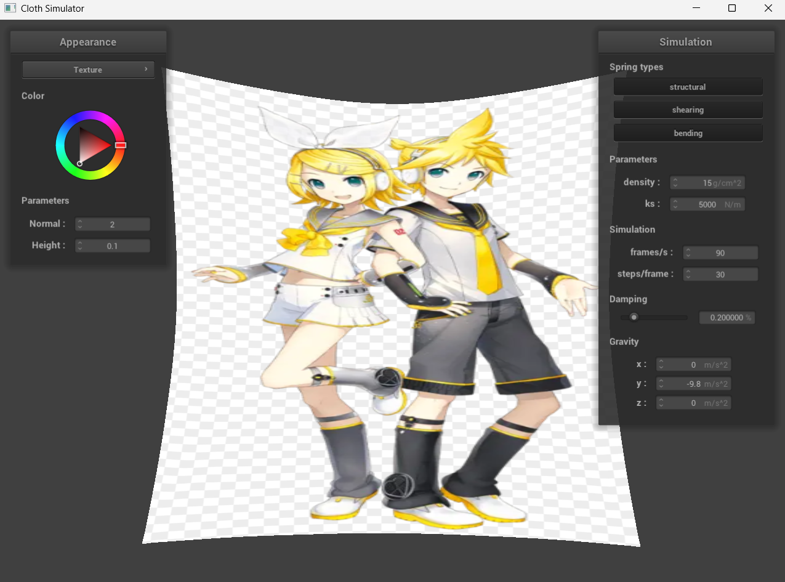
This result confirms that the UV coordinates are being passed correctly through the vertex shader into the fragment shader. The image bends with the simulated cloth, but the color itself comes from the texture sample.
Bump mapping
For bump mapping, I used a brick height texture instead of the default height map. Bump mapping does not move vertices. It only changes the normal used for lighting. In the shader, I sampled the height map at the current UV coordinate and at nearby UV coordinates in the \(u\) and \(v\) directions. The differences between those samples approximate the local height slope. From that slope, I constructed a perturbed normal in tangent space and transformed it back using the tangent-bitangent-normal frame.
On the cloth, I used a larger height value so that the brick pattern is clearly visible. The result shows strong local lighting variation, but the cloth boundary itself is not displaced. This is the defining property of bump mapping: it creates apparent surface detail through lighting, while the actual mesh geometry stays the same.
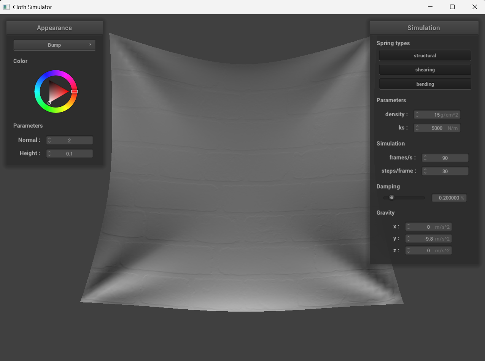
|
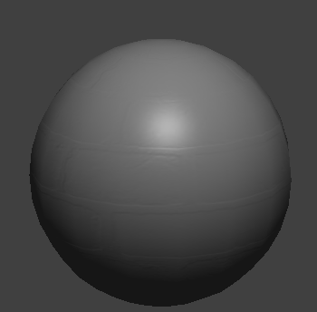 -o 16 -a 16. The brick detail changes the shading, but the object still reads as a sphere.
|
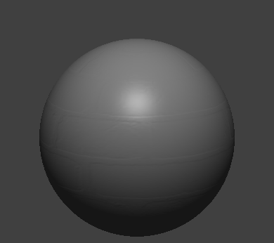 -o 128 -a 128. The surface shading is smoother, but the geometric outline is still essentially unchanged.
|
The sphere comparison shows that bump mapping is only mildly affected by mesh coarseness. The 16-resolution sphere and the 128-resolution sphere both keep a spherical outline because bump mapping does not move vertices. The 128-resolution version looks slightly smoother because the underlying sphere mesh is smoother, but the height map mainly affects shading rather than geometry.
Displacement mapping
Displacement mapping changes the actual geometry. In the displacement vertex shader, I sampled the same brick height texture and moved each vertex along its normal direction:
\[ p' = p + n \cdot h(u,v) \cdot k_h . \]
I used a moderate height value for displacement because the geometric effect was already clear. Compared with bump mapping, displacement mapping is much more sensitive to mesh resolution. With -o 16 -a 16, the sphere has too few vertices to represent the height field smoothly. The result is no longer a clean sphere: it becomes sharp, faceted, and almost rock-like. With -o 128 -a 128, the sphere has many more vertices, so the same height map produces a smoother displaced surface and the object remains much more spherical.
|
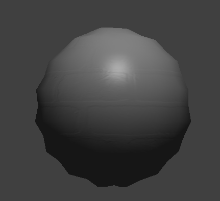 -o 16 -a 16. The geometry becomes sharp and faceted, and the object no longer looks like a smooth ball.
|
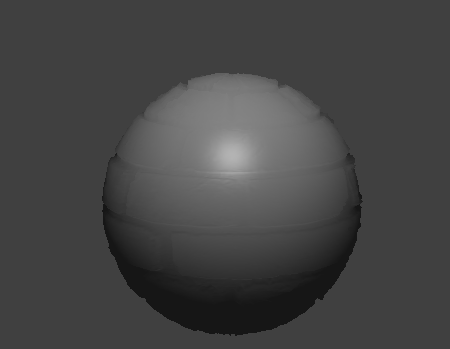 -o 128 -a 128. The same height map gives a smoother displaced surface because the mesh has many more vertices.
|
The contrast between bump and displacement is clear. Bump mapping reacts much less to the 16-to-128 resolution change because it perturbs normals but does not change vertex positions. Displacement mapping reacts much more strongly: at resolution 16 the object becomes visibly angular and distorted, while at resolution 128 the same height texture produces a smoother and more plausible surface. This is why displacement needs enough geometric resolution, while bump mapping can create convincing small-scale detail even on a relatively coarse mesh.
Environment-mapped reflections
For the mirror shader, I computed the view direction from the camera to the fragment, reflected it around the surface normal, and used that reflected direction to sample the cubemap. This approximates a mirror material using an environment map instead of tracing reflection rays.
|
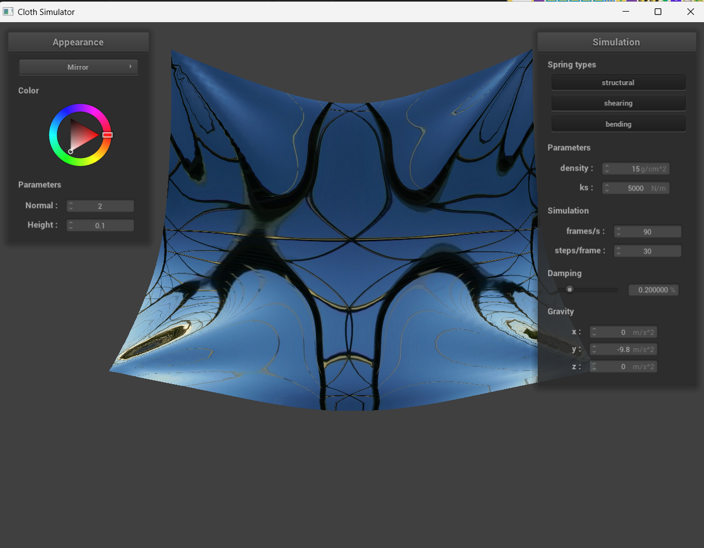 |
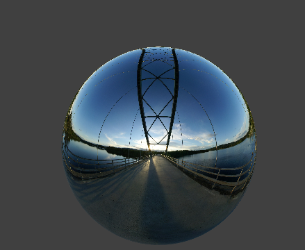 |
The same cubemap reflection behaves differently on the cloth and on the sphere. On the cloth, the environment is stretched and folded by the cloth's changing normals. On the sphere, the reflected environment is more coherent because the normal direction changes smoothly over the surface.
Custom shader: texture mapping with bright rin lighting
For the extra shader, I replaced the starter Custom.frag normal-visualization shader with my own custom shader. The original Custom shader visualized normals, which is why it appeared mostly green when the cloth normals pointed upward. My final Custom shader instead combines texture mapping, direct lighting, and a bright Fresnel-style rin highlight.
The base color comes from u_texture_1, sampled using the interpolated UV coordinate, so the shader keeps the custom image from the texture mapping task. I then add ambient, diffuse, and specular lighting so that the textured cloth still responds to the light and to the folds of the simulated surface.
The stylized part is the rin light. I compute a Fresnel-style term using the angle between the surface normal and the view direction:
\[ f = (1 - \max(0,n \cdot v))^p . \]
This value is small when the surface faces the camera and large near the silhouette, where the normal turns away from the view direction. I use this term to add a bright cyan rin light. In the result, the center of the cloth keeps the custom texture, while the boundary and grazing-angle regions become much brighter.
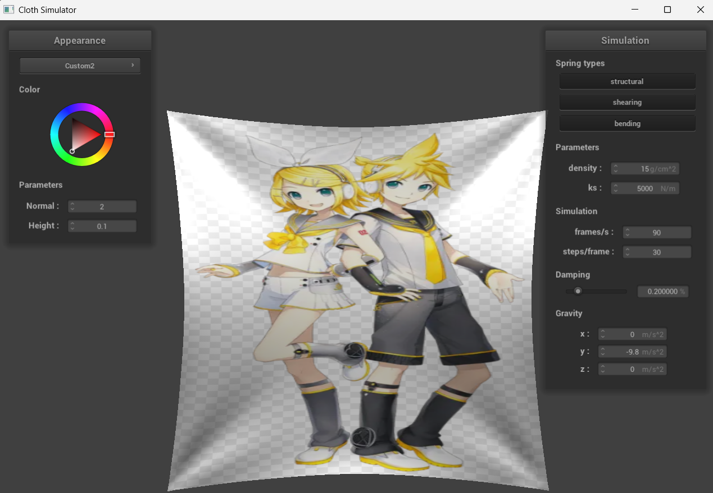
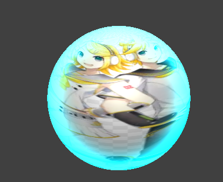
This custom shader combines ideas from several required shaders. It uses UV texture sampling like the texture shader, light and view directions like the Phong shader, and an additional Fresnel rin term to emphasize silhouettes. It is also different from the mirror shader: the mirror shader samples a cubemap using a reflected direction, while my Custom shader keeps a 2D texture as the base color and adds a stylized cyan edge highlight.